Exploratory analysis of CaCyBP and S100a6 expression in embryonic mice cortex dataset with focus on astrocytic lineage
Evgenii O. Tretiakov
2025-06-17
Last updated: 2025-06-17
Checks: 7 0
Knit directory: Cinquina_2024/
This reproducible R Markdown analysis was created with workflowr (version 1.7.1). The Checks tab describes the reproducibility checks that were applied when the results were created. The Past versions tab lists the development history.
Great! Since the R Markdown file has been committed to the Git repository, you know the exact version of the code that produced these results.
Great job! The global environment was empty. Objects defined in the global environment can affect the analysis in your R Markdown file in unknown ways. For reproduciblity it’s best to always run the code in an empty environment.
The command set.seed(20240320) was run prior to running
the code in the R Markdown file. Setting a seed ensures that any results
that rely on randomness, e.g. subsampling or permutations, are
reproducible.
Great job! Recording the operating system, R version, and package versions is critical for reproducibility.
Nice! There were no cached chunks for this analysis, so you can be confident that you successfully produced the results during this run.
Great job! Using relative paths to the files within your workflowr project makes it easier to run your code on other machines.
Great! You are using Git for version control. Tracking code development and connecting the code version to the results is critical for reproducibility.
The results in this page were generated with repository version cda3445. See the Past versions tab to see a history of the changes made to the R Markdown and HTML files.
Note that you need to be careful to ensure that all relevant files for
the analysis have been committed to Git prior to generating the results
(you can use wflow_publish or
wflow_git_commit). workflowr only checks the R Markdown
file, but you know if there are other scripts or data files that it
depends on. Below is the status of the Git repository when the results
were generated:
Ignored files:
Ignored: .Rhistory
Ignored: .Rproj.user/
Ignored: .pixi/
Ignored: data/SCP1290/
Ignored: data/azimuth_integrated.rds
Note that any generated files, e.g. HTML, png, CSS, etc., are not included in this status report because it is ok for generated content to have uncommitted changes.
These are the previous versions of the repository in which changes were
made to the R Markdown (analysis/cortex_visualisation.Rmd)
and HTML (docs/cortex_visualisation.html) files. If you’ve
configured a remote Git repository (see ?wflow_git_remote),
click on the hyperlinks in the table below to view the files as they
were in that past version.
| File | Version | Author | Date | Message |
|---|---|---|---|---|
| Rmd | cda3445 | EugOT | 2025-06-17 | fix visualisations |
| Rmd | 6b567fa | EugOT | 2025-06-17 | add more markers validations |
| html | 9636b47 | Evgenii O. Tretiakov | 2024-07-26 | Build site. |
| html | 1d9d8ea | Evgenii O. Tretiakov | 2024-07-26 | Build site. |
| html | 7a9f863 | Evgenii O. Tretiakov | 2024-07-26 | Build site. |
| Rmd | 5fe5043 | Evgenii O. Tretiakov | 2024-07-26 | fix typos |
| html | 5fe5043 | Evgenii O. Tretiakov | 2024-07-26 | fix typos |
| html | 756e082 | Evgenii O. Tretiakov | 2024-06-14 | Build site. |
| Rmd | 707b18d | Evgenii O. Tretiakov | 2024-06-14 | add stacked violin plots |
| html | 47e285e | Evgenii O. Tretiakov | 2024-06-14 | Build site. |
| Rmd | 1ba6643 | Evgenii O. Tretiakov | 2024-06-14 | improve design and analysis of differentially expressed genes across astrocytic clusters |
| html | fb34412 | Evgenii O. Tretiakov | 2024-06-09 | Build site. |
| Rmd | 62900cf | Evgenii O. Tretiakov | 2024-06-09 | add header to fix vector output in pdf |
| Rmd | fd0e9b9 | Evgenii O. Tretiakov | 2024-06-09 | add visualisation of cortical data analysis of CaCyBP and S100a6 |
| html | fd0e9b9 | Evgenii O. Tretiakov | 2024-06-09 | add visualisation of cortical data analysis of CaCyBP and S100a6 |
# Create a vector with the stage of development for each object
stage_info <- c("E11.5", "E12.5", "E13.5", "E14.5", "E15.5", "E16", "E18.5", "E18", "P1", "P1", "E10", "E17.5", "P4")merged_cortex_2 <- SeuratObject::LoadSeuratRds(here::here("data/azimuth_integrated.rds"))
merged_cortex_2$cell_name <- Cells(merged_cortex_2)
merged_cortex_2An object of class Seurat
28186 features across 82415 samples within 5 assays
Active assay: RNA (27998 features, 2000 variable features)
25 layers present: data.E11.5, data.E12.5, data.E13.5, data.E14.5, data.E15.5, data.E16, data.E18.5, data.E18, data.P1, data.E10, data.E17.5, data.P4, scale.data, counts.E11.5, counts.E12.5, counts.E13.5, counts.E14.5, counts.E15.5, counts.E16, counts.E18.5, counts.E18, counts.P1, counts.E10, counts.E17.5, counts.P4
4 other assays present: prediction.score.class, prediction.score.cluster, prediction.score.subclass, prediction.score.cross_species_cluster
7 dimensional reductions calculated: pca, integrated_dr, ref.umap, integrated.cca, umap.cca, harmony, umap.harmonyorig_umap <- readr::read_tsv(
here("data/SCP1290/cluster/cluster_scDevSC.merged.umap.txt"),
skip = 2,
col_names = c("cell_name", "UMAP_1", "UMAP_2"),
col_types = list(col_character(), col_double(), col_double())
)
glimpse(orig_umap)Rows: 98,047
Columns: 3
$ cell_name <chr> "E10_v1_AAACCTGAGGGTCTCC-1", "E10_v1_AAACCTGCACAACGCC-1", "E…
$ UMAP_1 <dbl> -3.0025911, -3.6729214, -3.8859395, -3.9020242, -2.9312939, …
$ UMAP_2 <dbl> -10.453364, -6.552985, -10.773631, -10.869657, -10.769403, -…orig_umap %<>% tibble::column_to_rownames("cell_name")
orig_umap %<>% as.matrix()
orig_tsne <- readr::read_tsv(
here("data/SCP1290/cluster/cluster_scDevSC.merged.tsne.txt"),
skip = 2,
col_names = c("cell_name", "tSNE_1", "tSNE_2"),
col_types = list(col_character(), col_double(), col_double())
)
glimpse(orig_tsne)Rows: 98,047
Columns: 3
$ cell_name <chr> "E10_v1_AAACCTGAGGGTCTCC-1", "E10_v1_AAACCTGCACAACGCC-1", "E…
$ tSNE_1 <dbl> 15.442958, 10.373660, 14.828413, 16.307658, 18.062250, 13.72…
$ tSNE_2 <dbl> -19.603245, -17.062466, -20.102599, -20.003542, -18.636268, …orig_tsne %<>% tibble::column_to_rownames("cell_name")
orig_tsne %<>% as.matrix()
orig_metadata <- readr::read_tsv(here(
"data/SCP1290/metadata/metaData_scDevSC.txt"))
orig_metadata %<>% rename("cell_name" = "NAME")
orig_metadata_types <- orig_metadata[1,] |> purrr::simplify()
orig_metadata %<>% filter(!cell_name == "TYPE")
glimpse(orig_metadata)Rows: 98,047
Columns: 28
$ cell_name <chr> "E10_v1_AAACCTGAGGGTCTCC-…
$ orig_ident <chr> "E10", "E10", "E10", "E10…
$ nCount_RNA <chr> "1544", "1157", "2081", "…
$ nFeature_RNA <chr> "1022", "783", "1200", "1…
$ percent_mito <chr> "0.02007772", "0.01469317…
$ n_hkgene <chr> "51", "39", "67", "71", "…
$ S_Score <chr> "0.356987282", "0.4538538…
$ G2M_Score <chr> "0.330795055", "0.2605599…
$ Phase <chr> "S", "S", "S", "G2M", "S"…
$ CC_Difference <chr> "0.026192226", "0.1932938…
$ seurat_clusters <chr> "34", "34", "34", "37", "…
$ RNA_snn_res_1 <chr> "20", "20", "20", "20", "…
$ scrublet_doublet <chr> "FALSE", "FALSE", "FALSE"…
$ RNA_snn_res_2 <chr> "34", "34", "34", "37", "…
$ Doublet_intersect <chr> NA, NA, NA, NA, NA, NA, N…
$ Gral_cellType <chr> NA, NA, NA, NA, NA, NA, N…
$ New_cellType <chr> "Apical progenitors", "In…
$ biosample_id <chr> "E10", "E10", "E10", "E10…
$ donor_id <chr> "mouse_E10", "mouse_E10",…
$ species <chr> "NCBITaxon_10090", "NCBIT…
$ disease <chr> "PATO_0000461", "PATO_000…
$ disease__ontology_label <chr> "normal", "normal", "norm…
$ organ <chr> "UBERON_0008930", "UBERON…
$ organ__ontology_label <chr> "somatosensory cortex", "…
$ library_preparation_protocol <chr> "EFO_0009899", "EFO_00098…
$ library_preparation_protocol__ontology_label <chr> "10X 3' v2 sequencing", "…
$ sex <chr> "mixed", "mixed", "mixed"…
$ species__ontology_label <chr> "Mus musculus", "Mus musc…change_column_types <- function(df, types) {
for (col_name in names(types)) {
col_type <- types[col_name]
if (col_type == "character") {
df[[col_name]] <- as.character(df[[col_name]])
} else if (col_type == "numeric") {
df[[col_name]] <- as.numeric(df[[col_name]])
} else if (col_type == "integer") {
df[[col_name]] <- as.integer(df[[col_name]])
} else if (col_type == "logical") {
df[[col_name]] <- as.logical(df[[col_name]])
} else if (col_type == "factor") {
df[[col_name]] <- as.factor(df[[col_name]])
} else if (col_type == "group") {
df[[col_name]] <- as.factor(df[[col_name]])
} else {
warning(paste("Unknown type:", col_type, "for column", col_name))
}
}
return(df)
}
# Apply the function to the metadata
orig_metadata <- change_column_types(orig_metadata, orig_metadata_types)
# Print the modified metadata
glimpse(orig_metadata)Rows: 98,047
Columns: 28
$ cell_name <chr> "E10_v1_AAACCTGAGGGTCTCC-…
$ orig_ident <fct> E10, E10, E10, E10, E10, …
$ nCount_RNA <dbl> 1544, 1157, 2081, 2490, 2…
$ nFeature_RNA <dbl> 1022, 783, 1200, 1430, 14…
$ percent_mito <dbl> 0.020077720, 0.014693172,…
$ n_hkgene <dbl> 51, 39, 67, 71, 70, 50, 4…
$ S_Score <dbl> 0.35698728, 0.45385381, 0…
$ G2M_Score <dbl> 0.33079506, 0.26055995, 0…
$ Phase <fct> S, S, S, G2M, S, S, S, S,…
$ CC_Difference <dbl> 0.026192226, 0.193293862,…
$ seurat_clusters <fct> 34, 34, 34, 37, 37, 34, 4…
$ RNA_snn_res_1 <fct> 20, 20, 20, 20, 20, 20, 3…
$ scrublet_doublet <fct> FALSE, FALSE, FALSE, FALS…
$ RNA_snn_res_2 <fct> 34, 34, 34, 37, 37, 34, 4…
$ Doublet_intersect <fct> NA, NA, NA, NA, NA, NA, N…
$ Gral_cellType <fct> NA, NA, NA, NA, NA, NA, N…
$ New_cellType <fct> Apical progenitors, Inter…
$ biosample_id <fct> E10, E10, E10, E10, E10, …
$ donor_id <fct> mouse_E10, mouse_E10, mou…
$ species <fct> NCBITaxon_10090, NCBITaxo…
$ disease <fct> PATO_0000461, PATO_000046…
$ disease__ontology_label <fct> normal, normal, normal, n…
$ organ <fct> UBERON_0008930, UBERON_00…
$ organ__ontology_label <fct> somatosensory cortex, som…
$ library_preparation_protocol <fct> EFO_0009899, EFO_0009899,…
$ library_preparation_protocol__ontology_label <fct> 10X 3' v2 sequencing, 10X…
$ sex <fct> mixed, mixed, mixed, mixe…
$ species__ontology_label <fct> Mus musculus, Mus musculu…orig_srt <- Read10X(data.dir = here("data/SCP1290/expression/601ae2f4771a5b0d72588bfb"))
# Convert the log1p normalized matrix to a standard matrix if it's not already
normalized_matrix <- as.matrix(orig_srt)
# Reverse the log1p transformation to get the scaled count matrix
count_matrix <- expm1(normalized_matrix)
# Extract scaling factors
scaling_factors <- orig_metadata[orig_metadata$cell_name == colnames(count_matrix),]$nCount_RNA / 1e4
# Multiply each column by its scaling factor and round the results (it's not necessary but just to be sure)
scaled_count_matrix <- sweep(count_matrix, 2, scaling_factors, FUN = "*")
scaled_count_matrix <- round(scaled_count_matrix)
# Convert the count matrix to a sparse matrix format (dgCMatrix) as needed
count_matrix_sparse <- as(scaled_count_matrix, "dgCMatrix")
# Create a Seurat object using the recovered count matrix
merged_cortex <- CreateSeuratObject(counts = count_matrix_sparse, meta.data = orig_metadata)
merged_cortex[["umap"]] <- CreateDimReducObject(embeddings = orig_umap, key = "UMAP_", assay = DefaultAssay(merged_cortex))
merged_cortex[["tsne"]] <- CreateDimReducObject(embeddings = orig_tsne, key = "tSNE_", assay = DefaultAssay(merged_cortex))
merged_cortex$stage <- merged_cortex$orig.ident
table(merged_cortex$New_cellType)
Apical progenitors Astrocytes Cajal Retzius cells
18491 2976 532
CThPN Cycling glial cells DL CPN
4607 1004 3106
DL_CPN_1 DL_CPN_2 Doublet
422 146 1854
Endothelial cells Ependymocytes Immature neurons
291 35 3092
Intermediate progenitors Interneurons Layer 4
8490 10469 5317
Layer 6b Low quality cells Microglia
194 4545 263
Migrating neurons NP Oligodendrocytes
12332 424 1098
Pericytes Red blood cells SCPN
236 330 2987
UL CPN VLMC
14041 765 Idents(merged_cortex) <- "New_cellType"
merged_cortex <- subset(merged_cortex, idents = c("Doublet", "Low quality cells", "Red blood cells"), invert = TRUE)
merged_cortex <-
Store_Palette_Seurat(
seurat_object = merged_cortex,
palette = rev(brewer.pal(n = 11, name = "Spectral")),
palette_name = "expr_Colour_Pal"
)
merged_cortex <- Store_Palette_Seurat(
seurat_object = merged_cortex,
palette = ggsci::pal_ucscgb("default")(length(levels(merged_cortex$New_cellType))),
palette_name = "types_Colour_Pal",
overwrite = T
)
names(merged_cortex@misc$types_Colour_Pal) <- levels(merged_cortex$New_cellType)
merged_cortex <- Store_Palette_Seurat(
seurat_object = merged_cortex,
palette = ggsci::pal_gsea("default")(length(levels(merged_cortex$stage))),
palette_name = "stage_Colour_Pal",
overwrite = T
)
names(merged_cortex@misc$stage_Colour_Pal) <- levels(merged_cortex$stage)
# Get the list of S100 family genes
s100_genes <- grep("^S100", rownames(merged_cortex), value = TRUE)
genes.embed <- c(
"Abcd1",
"Abcd2",
"Abcd3",
"Acaa1",
"Acaa2",
"Acox1",
"Agrn",
"Agt",
"Alcam",
"Aldh1a1",
"Aldh1l1",
"Aldoc",
"Angpt1",
"Apoe",
"App",
"Aqp4",
"Arf1",
"Bmp7",
"Bsg",
"Cacybp",
"Caf4",
"Ccl25",
"Ckb",
"Cnr1",
"Cnr2",
"Col4a5",
"Cst3",
"Dagla",
"Daglb",
"Decr2",
"Dcc",
"Dnm1",
"Drp1",
"Ech1",
"Efna5",
"Egfr",
"Enho",
"Eno1",
"Faah",
"Fgf1",
"Fgfr3",
"Fis1",
"Fos",
"Fth1",
"Ftl1",
"Gfap",
"Gja1",
"Gli1",
"Glul",
"Gnai2",
"Gnas",
"H2-K1",
"Hacd2",
"Hadhb",
"Hbegf",
"Hepacam",
"Hif1",
"Htra1",
"Igsf1",
"Il18",
"Il1rapl1",
"Itgav",
"Jam2",
"Lama2",
"Lamb2",
"Lcat",
"Lgi1",
"Lgi4",
"Lpcat3",
"Lrpap1",
"Lrrc4b",
"Lxn",
"Mdk",
"Mdv1",
"Mfn1",
"Mfn2",
"Mgll",
"Mief1",
"Napepld",
"Ncam1",
"Ncan",
"Ndrg2",
"Nfasc",
"Nfia",
"Nlgn3",
"Nrxn1",
"Nrxn2",
"Ntn1",
"Ntrk3",
"Opa1",
"Otp",
"Pex1",
"Pex10",
"Pex12",
"Pex13",
"Pex14",
"Pex16",
"Pex2",
"Pex26",
"Pex3",
"Pex6",
"Pkm",
"Pla2g7",
"Plcb1",
"Psap",
"Ptn",
"Pygb",
"Ralyl",
"Rgma",
"Rtn4",
"S100a1",
"S100a6",
"S100b",
"Siah1a",
"Siah1b",
"Scd2",
"Sdc2",
"Sema6a",
"Sema6d",
"Sgcd",
"Sirpa",
"Slc1a2",
"Slc1a3",
"Slc38a1",
"Slc4a4",
"Slc6a11",
"Slc7a10",
"Slit1",
"Slit2",
"Slitrk2",
"Sorbs1",
"Sox9",
"Sparc",
"Spon1",
"Tafa1",
"Timp3",
"Tkt",
"Trpv1",
"Vcam1",
"Vegfa"
) %>% .[. %in% rownames(merged_cortex)]
merged_cortex <- FindVariableFeatures(merged_cortex, nfeatures = 5000, verbose = FALSE)
merged_cortex <- NormalizeData(
merged_cortex,
features = c(
VariableFeatures(merged_cortex),
s100_genes,
genes.embed),
verbose = FALSE)
# Scale data
merged_cortex <- ScaleData(
merged_cortex,
features = c(
VariableFeatures(merged_cortex),
s100_genes,
genes.embed),
verbose = FALSE)# Create DimPlot
p1 <- DimPlot(
merged_cortex,
reduction = "umap",
group.by = c("stage", "New_cellType"),
combine = FALSE, label.size = 2,
alpha = 0.7,
cols = c(merged_cortex@misc$types_Colour_Pal, merged_cortex@misc$stage_Colour_Pal)
)
p2 <- DimPlot(
merged_cortex,
reduction = "tsne",
group.by = c("stage", "New_cellType"),
combine = FALSE, label.size = 2,
alpha = 0.7,
cols = c(merged_cortex@misc$types_Colour_Pal, merged_cortex@misc$stage_Colour_Pal)
)wrap_plots(c(p1, p2), ncol = 2, byrow = F)
# Create a custom FeaturePlot for each S100 gene
plot_list <-
lapply(
c(s100_genes, "Cacybp", "Siah1a", "Siah1b"),
function(gene) {
FeaturePlot_scCustom(
seurat_object = merged_cortex,
features = gene,
colors_use = merged_cortex@misc$expr_Colour_Pal,
na_color = "lightgray",
layer = "data",
order = TRUE,
pt.size = 1,
reduction = "umap",
split.by = "stage",
split_collect = FALSE,
label = F,
label_feature_yaxis = TRUE,
combine = FALSE
)
})
# Combine the plots into a single grid
combined_plot <- patchwork::wrap_plots(plot_list, ncol = 1)
# Display the combined plot
print(combined_plot)
# Create a compact DotPlot
compact_plot <- DotPlot(
object = merged_cortex,
features = c(s100_genes,
"Cacybp",
"Siah1a",
"Siah1b"),
group.by = "stage",
cluster.idents = FALSE,
scale = TRUE,
dot.scale = 12
) + RotatedAxis()
# Display the compact plot
print(compact_plot)
table(merged_cortex$New_cellType)
Apical progenitors Astrocytes Cajal Retzius cells
18491 2976 532
CThPN Cycling glial cells DL CPN
4607 1004 3106
DL_CPN_1 DL_CPN_2 Endothelial cells
422 146 291
Ependymocytes Immature neurons Intermediate progenitors
35 3092 8490
Interneurons Layer 4 Layer 6b
10469 5317 194
Microglia Migrating neurons NP
263 12332 424
Oligodendrocytes Pericytes SCPN
1098 236 2987
UL CPN VLMC
14041 765 merged_cortex@meta.data |> janitor::tabyl(New_cellType, stage)plot_gene_by_dev <- function(x) {
f_plot <- FeaturePlot(
merged_cortex,
cols = merged_cortex@misc$expr_Colour_Pal,
features = x,
max.cutoff = "q99",
pt.size = 1,
alpha = 0.6,
order = TRUE,
reduction = "umap",
split.by = "stage",
combine = T
)
# Combine the plots into a single grid
combined_plot <- patchwork::wrap_plots(f_plot, nrow = 1)
# Display the combined plot
print(combined_plot)
}
genes.embed |> purrr::walk(plot_gene_by_dev)


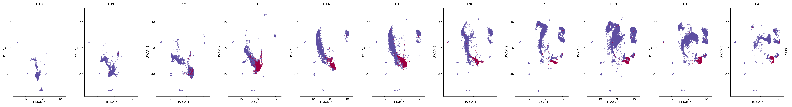


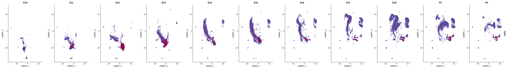


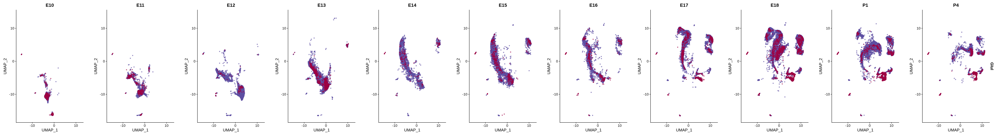


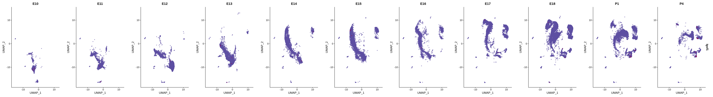


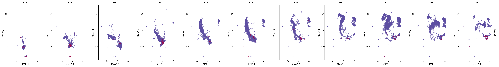


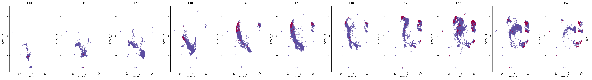


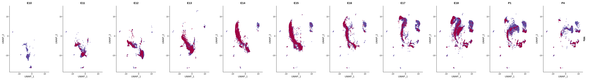

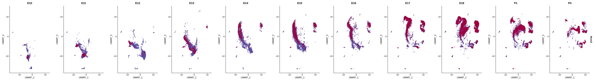

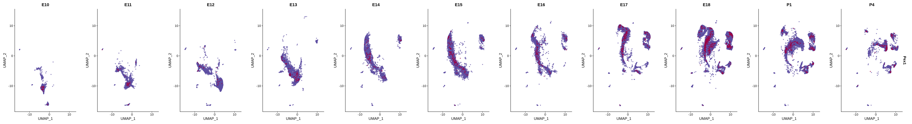


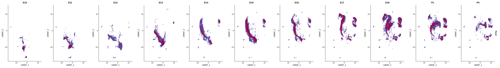


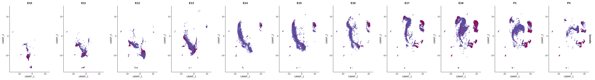


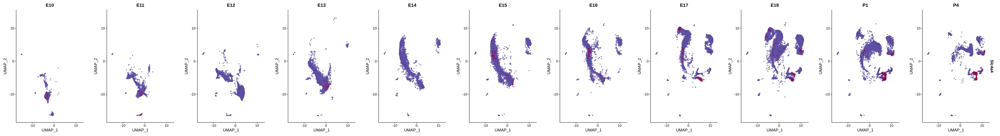


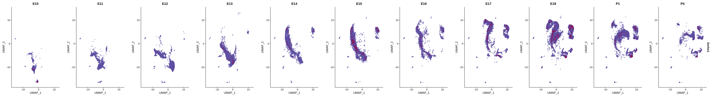


FeaturePlot(merged_cortex,
blend = TRUE,
features = c("S100a6", "Cacybp"),
blend.threshold = 0.4,
max.cutoff = "q99",
min.cutoff = "q50",
pt.size = 0.7,
cols = c("grey98", "red", "blue"),
order = T,
alpha = 0.35)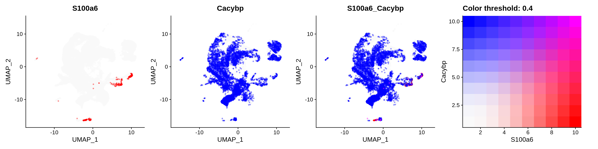
VlnPlot(merged_cortex, features = c("S100a6", "Cacybp", "Siah1a", "Siah1b", "Ndrg2", "Aldoc", "Slc1a3", "Glul", "Apoe", "Aldh1l1", "Ntrk2", "Gfap", "Gja1", "Htra1", "Aqp4", "Ntsr2"), group.by = "New_cellType",
cols = merged_cortex@misc$types_Colour_Pal)
Stacked_VlnPlot(seurat_object = merged_cortex, features = c("S100a6", "Cacybp", "Siah1a", "Siah1b", "Ndrg2", "Aldoc", "Slc1a3", "Glul", "Apoe", "Aldh1l1", "Ntrk2", "Gfap", "Gja1", "Htra1", "Aqp4", "Ntsr2"), x_lab_rotate = TRUE,
colors_use = merged_cortex@misc$types_Colour_Pal, group.by = "stage", split.by = "New_cellType")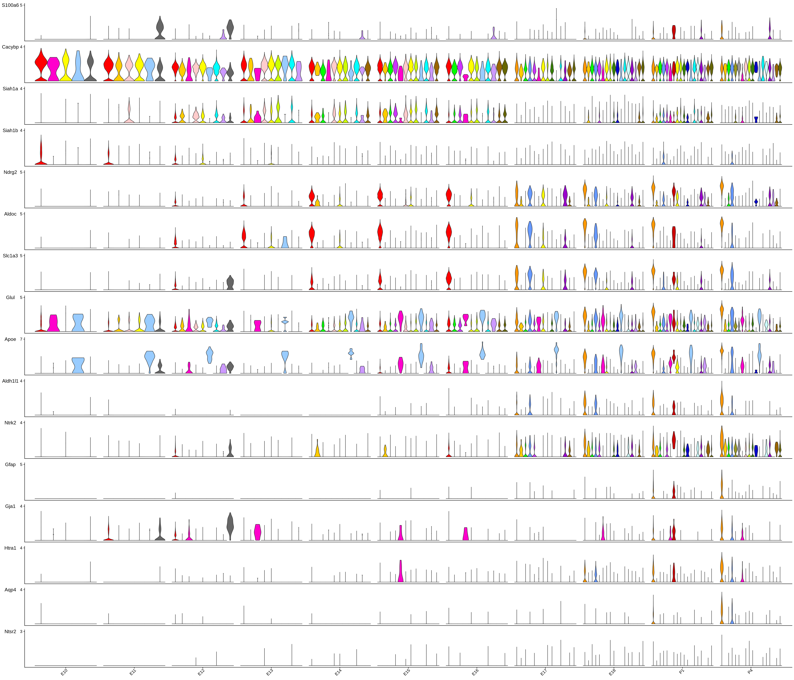
Stacked_VlnPlot(seurat_object = merged_cortex, features = c("S100a6", "Cacybp", "Siah1a", "Siah1b", "Ndrg2", "Aldoc", "Slc1a3", "Glul", "Apoe", "Aldh1l1", "Ntrk2", "Gfap", "Gja1", "Htra1", "Aqp4", "Ntsr2"), x_lab_rotate = TRUE,
colors_use = merged_cortex@misc$stage_Colour_Pal, group.by = "New_cellType", split.by = "stage")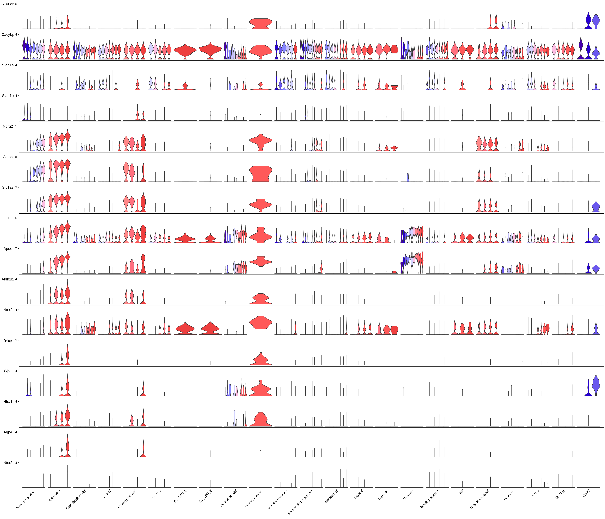
astro <- subset(
x = merged_cortex,
subset = New_cellType == c("Apical progenitors",
"Cycling glial cells",
"Astrocytes"))
astro <- FindVariableFeatures(astro, nfeatures = 5000, verbose = FALSE)
# Scale data
astro <- ScaleData(
astro,
features = c(
VariableFeatures(astro),
s100_genes,
genes.embed),
verbose = FALSE)
# Run PCA
astro <- RunPCA(astro, verbose = FALSE)
# Find neighbors
astro <- FindNeighbors(astro, reduction = "pca", dims = 1:30)
# Find clusters
astro <- FindClusters(astro, resolution = 0.7, cluster.name = "astro_clusters", algorithm = 4, random.seed = 42)# Create DimPlot
p1 <- DimPlot(
astro,
reduction = "umap",
group.by = c("stage", "New_cellType"),
alpha = 0.6,
combine = FALSE, label.size = 2,
cols = c(merged_cortex@misc$types_Colour_Pal, merged_cortex@misc$stage_Colour_Pal)
)
p2 <- DimPlot(
astro,
reduction = "tsne",
group.by = c("stage", "New_cellType"),
alpha = 0.6,
combine = FALSE, label.size = 2,
cols = c(merged_cortex@misc$types_Colour_Pal, merged_cortex@misc$stage_Colour_Pal)
)wrap_plots(c(p1, p2), ncol = 2, byrow = F)
astro <- Store_Palette_Seurat(
seurat_object = astro,
palette = ggsci::pal_igv("default")(length(levels(astro$astro_clusters))),
palette_name = "clusters_Colour_Pal",
overwrite = T
)
names(astro@misc$clusters_Colour_Pal) <- levels(astro$astro_clusters)
DimPlot(
astro,
reduction = "umap",
group.by = c("astro_clusters"),
combine = FALSE, label.size = 2,
alpha = 0.6,
label = T,
cols = astro@misc$clusters_Colour_Pal
)[[1]]
Differential Gene expression of astrocytic clusters
Idents(astro) <- "New_cellType"
astro_subset <- subset(astro, idents = c("Astrocytes"))
Idents(astro_subset) <- "astro_clusters"
astro_subset <- subset(astro_subset, idents = c("8", "9", "12"))
# pseudobulk the counts based on donor-condition-celltype
pseudo_combined_astro_subset <- AggregateExpression(
astro_subset,
assays = "RNA",
return.seurat = TRUE,
group.by = c("stage", "astro_clusters"))
# each 'cell' is a donor-condition-celltype pseudobulk profile
tail(Cells(pseudo_combined_astro_subset))[1] "E18_9" "P1_8" "P1_9" "P1_12" "P4_8" "P4_9" # the metadata for the pseudobulk object is missing, so we need to add it back
pseudo_combined_astro_subset$astro_clusters <- sapply(strsplit(Cells(pseudo_combined_astro_subset), split = "_"), "[", 2)
pseudo_combined_astro_subset$stage <- sapply(strsplit(Cells(pseudo_combined_astro_subset), split = "_"), "[", 1)DimPlot(
astro_subset,
reduction = "umap",
group.by = c("astro_clusters"),
combine = FALSE, label.size = 2,
alpha = 0.6,
label = T,
cols = astro@misc$clusters_Colour_Pal
)[[1]]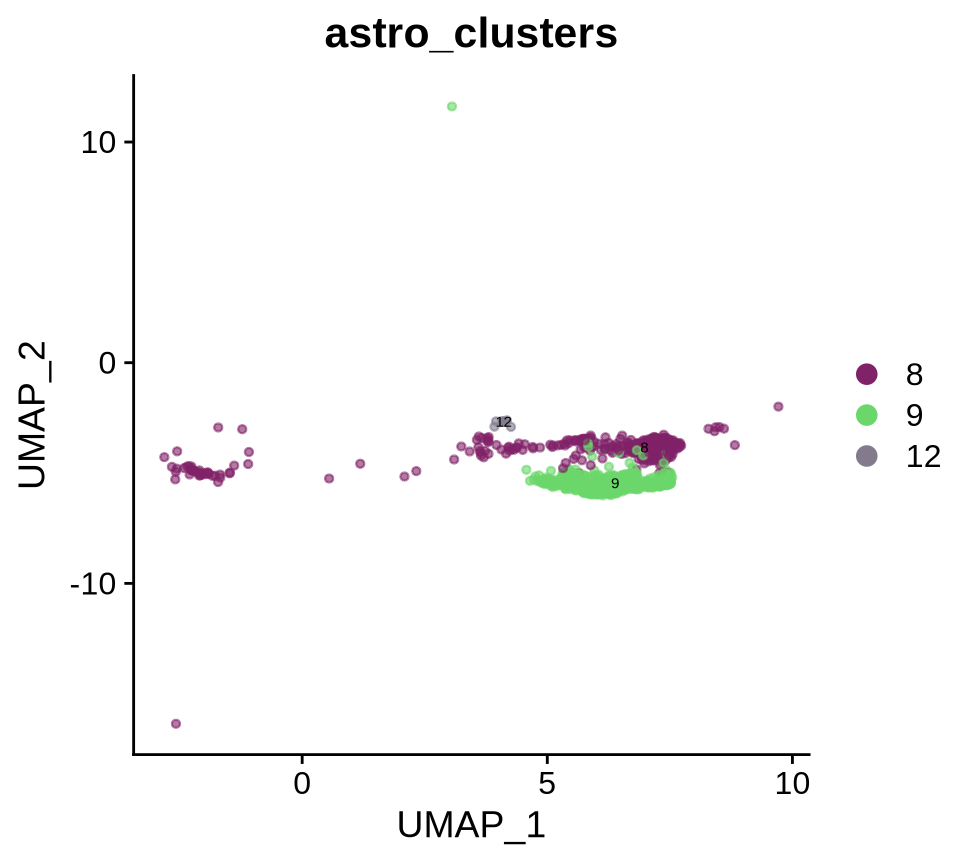
| Version | Author | Date |
|---|---|---|
| 47e285e | Evgenii O. Tretiakov | 2024-06-14 |
Violin plots
## DEG by two methods
astros.de <- FindAllMarkers(astro_subset, min.cells.group = 1, test.use = "LR", base = 10, only.pos = F, verbose = FALSE)
head(astros.de, n = 10)Idents(pseudo_combined_astro_subset) <- "astro_clusters"
bulk.astros.de <- FindAllMarkers(object = pseudo_combined_astro_subset,
min.cells.group = 1,
test.use = "DESeq2",
only.pos = F)
# Check if bulk.astros.de has results before proceeding
if (nrow(bulk.astros.de) > 0) {
head(bulk.astros.de, n = 15)
# compare the DE P-values between the single-cell level and the pseudobulk level results
names(bulk.astros.de) <- paste0(names(bulk.astros.de), ".bulk")
bulk.astros.de$gene <- rownames(bulk.astros.de)
names(astros.de) <- paste0(names(astros.de), ".sc")
astros.de$gene <- rownames(astros.de)
merge_dat <- merge(astros.de, bulk.astros.de, by = "gene")
} else {
# If bulk DE analysis failed, use only single-cell results
print("Bulk DE analysis returned no results, using only single-cell results")
names(astros.de) <- paste0(names(astros.de), ".sc")
astros.de$gene <- rownames(astros.de)
merge_dat <- astros.de
}[1] "Bulk DE analysis returned no results, using only single-cell results"# Process results based on whether bulk analysis succeeded
if (nrow(bulk.astros.de) > 0) {
merge_dat <- merge_dat[order(merge_dat$p_val.bulk), ]
# Number of genes that are marginally significant in both; marginally significant only in bulk; and marginally significant only in single-cell
common <-
merge_dat |>
filter(merge_dat$p_val.bulk < 0.05 &
merge_dat$p_val.sc < 0.05) |>
group_by(cluster.bulk) |>
slice_max(order_by = avg_log10FC.sc, n = 5) |>
pull(gene)
only_sc <- merge_dat$gene[which(merge_dat$p_val.bulk > 0.05 &
merge_dat$p_val.sc < 0.05)]
only_bulk <- merge_dat$gene[which(merge_dat$p_val.bulk < 0.05 &
merge_dat$p_val.sc > 0.05)]
print(paste0('# Common: ',length(common)))
print(paste0('# Only in single-cell: ',length(only_sc)))
print(paste0('# Only in bulk: ',length(only_bulk)))
} else {
# Use only single-cell results
merge_dat <- merge_dat[order(merge_dat$p_val.sc), ]
# Get top differentially expressed genes from single-cell analysis
common <-
merge_dat |>
filter(merge_dat$p_val.sc < 0.05) |>
group_by(cluster.sc) |>
slice_max(order_by = avg_log10FC.sc, n = 5) |>
pull(gene)
only_sc <- character(0)
only_bulk <- character(0)
print(paste0('# From single-cell only: ',length(common)))
}[1] "# From single-cell only: 16"# create a new column to annotate sample-condition-celltype in the single-cell dataset
astro_subset$stage.astro_clusters <- paste0(astro_subset$astro_clusters, "-", astro_subset$stage)
# generate violin plot
Idents(astro_subset) <- "astro_clusters"
if (nrow(bulk.astros.de) > 0 && length(common) > 0) {
print(merge_dat[merge_dat$gene %in% common[1:min(25, length(common))],c('gene','p_val.sc','p_val.bulk', 'cluster.bulk')])
} else if (length(common) > 0) {
print(merge_dat[merge_dat$gene %in% common[1:min(25, length(common))],c('gene','p_val.sc', 'cluster.sc')])
} gene p_val.sc cluster.sc
Pla2g3 Pla2g3 1.849925e-26 8
Cpne4.1 Cpne4.1 2.391571e-22 9
Ogn.1 Ogn.1 7.492780e-16 9
Zfp459.1 Zfp459.1 3.039095e-15 9
5930412G12Rik 5930412G12Rik 1.949185e-13 8
Neurog2 Neurog2 4.484752e-13 8
Helt Helt 4.036143e-09 8
Dct.1 Dct.1 9.192810e-08 9
H2-Ab1 H2-Ab1 1.085569e-07 8
Dynlrb2.1 Dynlrb2.1 7.108079e-07 9
Dlx1as Dlx1as 1.072962e-05 12
Fam159a Fam159a 2.003595e-03 12
Kcnh4 Kcnh4 2.003595e-03 12
Bvht Bvht 2.003595e-03 12
Zan Zan 2.003595e-03 12
Gm26563 Gm26563 2.003595e-03 12VlnPlot(astro_subset, features = c("S100a6", "Cacybp", "Siah1a", "Siah1b", "Ndrg2", "Aldoc", "Slc1a3", "Glul", "Apoe", "Aldh1l1", "Ntrk2", "Gfap", "Gja1", "Htra1", "Aqp4", "Ntsr2"), group.by = "astro_clusters",
cols = astro@misc$clusters_Colour_Pal) 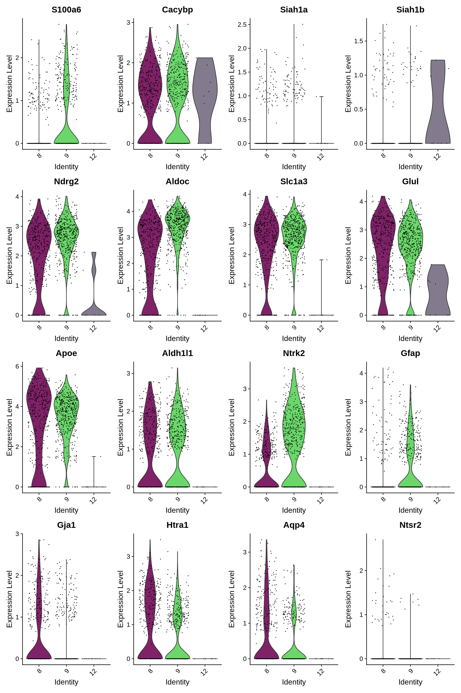
if (length(common) >= 24) {
VlnPlot(astro_subset, features = c("S100a6", "Cacybp", "Siah1a", "Siah1b", common[1:24]), group.by = "astro_clusters",
cols = astro@misc$clusters_Colour_Pal)
} else if (length(common) > 0) {
VlnPlot(astro_subset, features = c("S100a6", "Cacybp", "Siah1a", "Siah1b", common[1:min(24, length(common))]), group.by = "astro_clusters",
cols = astro@misc$clusters_Colour_Pal)
} else {
VlnPlot(astro_subset, features = c("S100a6", "Cacybp", "Siah1a", "Siah1b"), group.by = "astro_clusters",
cols = astro@misc$clusters_Colour_Pal)
}
if (length(common) >= 6) {
VlnPlot(astro_subset, features = c("S100a6", "Cacybp", "Siah1a", "Siah1b", common[1:6]), group.by = "stage.astro_clusters", ncol = 1)
} else if (length(common) > 0) {
VlnPlot(astro_subset, features = c("S100a6", "Cacybp", "Siah1a", "Siah1b", common[1:min(6, length(common))]), group.by = "stage.astro_clusters", ncol = 1)
} else {
VlnPlot(astro_subset, features = c("S100a6", "Cacybp", "Siah1a", "Siah1b"), group.by = "stage.astro_clusters", ncol = 1)
} 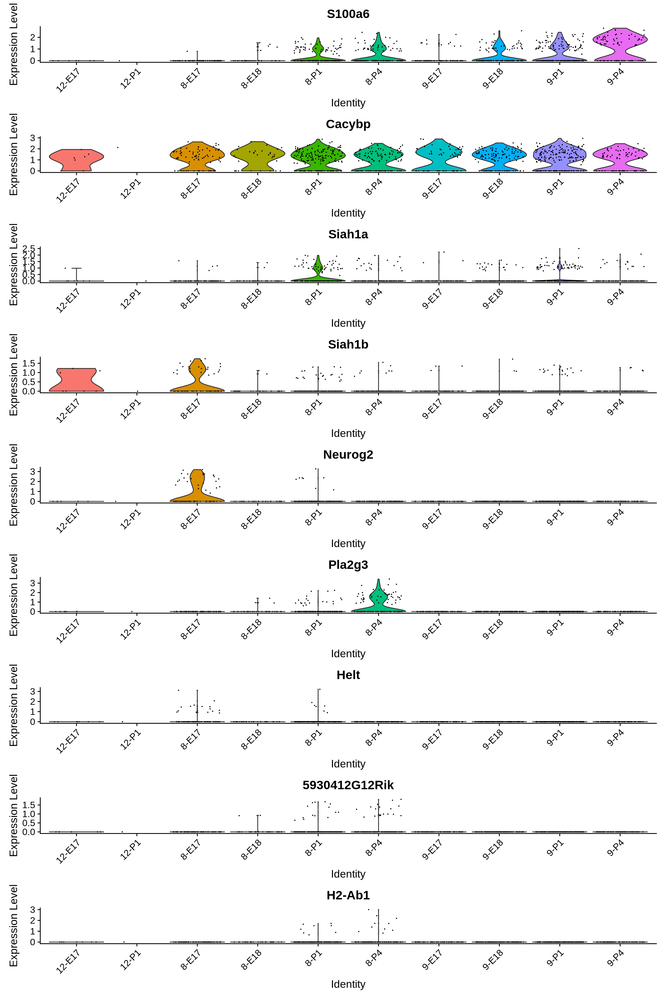
Distribution of S100-proteins family across development of astrocytic lineage
# Create a compact DotPlot
compact_plot <- DotPlot(
object = astro,
features = c(s100_genes,
"Cacybp",
"Siah1a",
"Siah1b"),
group.by = "stage",
cluster.idents = F,
scale = TRUE,
dot.scale = 12
) + RotatedAxis()
# Display the compact plot
print(compact_plot)
# Create a compact DotPlot
compact_plot <- DotPlot(
object = astro,
features = c(s100_genes,
"Cacybp",
"Siah1a",
"Siah1b"),
group.by = "stage",
cluster.idents = F,
cols = merged_cortex@misc$types_Colour_Pal[unique(astro$New_cellType)],
scale = TRUE,
split.by = "New_cellType",
dot.scale = 12
) + RotatedAxis()
# Display the compact plot
print(compact_plot)
astro$type.cluster <- str_c(astro$New_cellType, astro$astro_clusters, sep = "_")
# Create a compact DotPlot
if (length(common) >= 24) {
compact_plot <- DotPlot(
object = astro,
features = c("S100a6", "Cacybp", "Siah1a", "Siah1b", common[1:24]),
group.by = "stage",
cluster.idents = F,
cols = ggsci::pal_igv("default")(35),
scale = TRUE,
split.by = "type.cluster",
dot.scale = 12
) + RotatedAxis()
} else if (length(common) > 0) {
compact_plot <- DotPlot(
object = astro,
features = c("S100a6", "Cacybp", "Siah1a", "Siah1b", common[1:min(24, length(common))]),
group.by = "stage",
cluster.idents = F,
cols = ggsci::pal_igv("default")(35),
scale = TRUE,
split.by = "type.cluster",
dot.scale = 12
) + RotatedAxis()
} else {
compact_plot <- DotPlot(
object = astro,
features = c("S100a6", "Cacybp", "Siah1a", "Siah1b"),
group.by = "stage",
cluster.idents = F,
cols = ggsci::pal_igv("default")(35),
scale = TRUE,
split.by = "type.cluster",
dot.scale = 12
) + RotatedAxis()
}
# Display the compact plot
print(compact_plot)
Blend plots of S100a6 and CaCyBP
FeaturePlot(astro,
blend = TRUE,
features = c("S100a6", "Cacybp"),
blend.threshold = 0.4,
max.cutoff = "q99",
min.cutoff = "q30",
pt.size = 0.7,
cols = c("grey98", "red", "blue"),
order = T,
alpha = 0.35)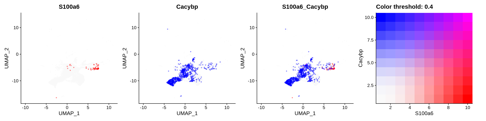
FeaturePlot(astro,
blend = TRUE,
features = c("S100a6", "S100b"),
blend.threshold = 0.4,
max.cutoff = "q99",
min.cutoff = "q30",
pt.size = 0.7,
cols = c("grey98", "red", "blue"),
order = T,
alpha = 0.35)
FeaturePlot(astro,
blend = TRUE,
features = c("Cacybp", "S100b"),
blend.threshold = 0.4,
max.cutoff = "q99",
min.cutoff = "q30",
pt.size = 0.7,
cols = c("grey98", "red", "blue"),
order = T,
alpha = 0.35)FeaturePlot(astro,
blend = TRUE,
features = c("S100a6", "Aldh1l1"),
blend.threshold = 0.4,
max.cutoff = "q99",
min.cutoff = "q30",
pt.size = 0.7,
cols = c("grey98", "red", "blue"),
order = T,
alpha = 0.35)FeaturePlot(astro,
blend = TRUE,
features = c("Cacybp", "Aldh1l1"),
blend.threshold = 0.4,
max.cutoff = "q99",
min.cutoff = "q30",
pt.size = 0.7,
cols = c("grey98", "red", "blue"),
order = T,
alpha = 0.35)FeaturePlot(astro,
blend = TRUE,
features = c("S100a6", "Gja1"),
blend.threshold = 0.4,
max.cutoff = "q99",
min.cutoff = "q30",
pt.size = 0.7,
cols = c("grey98", "red", "blue"),
order = T,
alpha = 0.35)
FeaturePlot(astro,
blend = TRUE,
features = c("Cacybp", "Gja1"),
blend.threshold = 0.4,
max.cutoff = "q99",
min.cutoff = "q30",
pt.size = 0.7,
cols = c("grey98", "red", "blue"),
order = T,
alpha = 0.35)
FeaturePlot(astro,
blend = TRUE,
features = c("S100a6", "Glul"),
blend.threshold = 0.4,
max.cutoff = "q99",
min.cutoff = "q30",
pt.size = 0.7,
cols = c("grey98", "red", "blue"),
order = T,
alpha = 0.35)
FeaturePlot(astro,
blend = TRUE,
features = c("Cacybp", "Glul"),
blend.threshold = 0.4,
max.cutoff = "q99",
min.cutoff = "q30",
pt.size = 0.7,
cols = c("grey98", "red", "blue"),
order = T,
alpha = 0.35)
FeaturePlot(astro,
blend = TRUE,
features = c("S100a6", "Apoe"),
blend.threshold = 0.4,
max.cutoff = "q99",
min.cutoff = "q30",
pt.size = 0.7,
cols = c("grey98", "red", "blue"),
order = T,
alpha = 0.35)
FeaturePlot(astro,
blend = TRUE,
features = c("Cacybp", "Apoe"),
blend.threshold = 0.4,
max.cutoff = "q99",
min.cutoff = "q30",
pt.size = 0.7,
cols = c("grey98", "red", "blue"),
order = T,
alpha = 0.35)
FeaturePlot(astro,
blend = TRUE,
features = c("S100a6", "Ntrk2"),
blend.threshold = 0.4,
max.cutoff = "q99",
min.cutoff = "q30",
pt.size = 0.7,
cols = c("grey98", "red", "blue"),
order = T,
alpha = 0.35)
FeaturePlot(astro,
blend = TRUE,
features = c("Cacybp", "Ntrk2"),
blend.threshold = 0.4,
max.cutoff = "q99",
min.cutoff = "q30",
pt.size = 0.7,
cols = c("grey98", "red", "blue"),
order = T,
alpha = 0.35)
FeaturePlot(astro,
blend = TRUE,
features = c("S100a6", "Ntsr2"),
blend.threshold = 0.4,
max.cutoff = "q99",
min.cutoff = "q30",
pt.size = 0.7,
cols = c("grey98", "red", "blue"),
order = T,
alpha = 0.35)
FeaturePlot(astro,
blend = TRUE,
features = c("Cacybp", "Ntsr2"),
blend.threshold = 0.4,
max.cutoff = "q99",
min.cutoff = "q30",
pt.size = 0.7,
cols = c("grey98", "red", "blue"),
order = T,
alpha = 0.35)
FeaturePlot(astro,
blend = TRUE,
features = c("S100a6", "Ndrg2"),
blend.threshold = 0.4,
max.cutoff = "q99",
min.cutoff = "q30",
pt.size = 0.7,
cols = c("grey98", "red", "blue"),
order = T,
alpha = 0.35)
FeaturePlot(astro,
blend = TRUE,
features = c("Cacybp", "Ndrg2"),
blend.threshold = 0.4,
max.cutoff = "q99",
min.cutoff = "q30",
pt.size = 0.7,
cols = c("grey98", "red", "blue"),
order = T,
alpha = 0.35)
FeaturePlot(astro,
blend = TRUE,
features = c("S100a6", "Aldoc"),
blend.threshold = 0.4,
max.cutoff = "q99",
min.cutoff = "q30",
pt.size = 0.7,
cols = c("grey98", "red", "blue"),
order = T,
alpha = 0.35)
FeaturePlot(astro,
blend = TRUE,
features = c("Cacybp", "Aldoc"),
blend.threshold = 0.4,
max.cutoff = "q99",
min.cutoff = "q30",
pt.size = 0.7,
cols = c("grey98", "red", "blue"),
order = T,
alpha = 0.35)
FeaturePlot(astro,
blend = TRUE,
features = c("S100a6", "Slc1a3"),
blend.threshold = 0.4,
max.cutoff = "q99",
min.cutoff = "q30",
pt.size = 0.7,
cols = c("grey98", "red", "blue"),
order = T,
alpha = 0.35)
FeaturePlot(astro,
blend = TRUE,
features = c("Cacybp", "Slc1a3"),
blend.threshold = 0.4,
max.cutoff = "q99",
min.cutoff = "q30",
pt.size = 0.7,
cols = c("grey98", "red", "blue"),
order = T,
alpha = 0.35)
FeaturePlot(astro,
blend = TRUE,
features = c("S100a6", "Gfap"),
blend.threshold = 0.4,
max.cutoff = "q99",
min.cutoff = "q30",
pt.size = 0.7,
cols = c("grey98", "red", "blue"),
order = T,
alpha = 0.35)
FeaturePlot(astro,
blend = TRUE,
features = c("Cacybp", "Gfap"),
blend.threshold = 0.4,
max.cutoff = "q99",
min.cutoff = "q30",
pt.size = 0.7,
cols = c("grey98", "red", "blue"),
order = T,
alpha = 0.35)
FeaturePlot(astro,
blend = TRUE,
features = c("S100a6", "Htra1"),
blend.threshold = 0.4,
max.cutoff = "q99",
min.cutoff = "q30",
pt.size = 0.7,
cols = c("grey98", "red", "blue"),
order = T,
alpha = 0.35)
FeaturePlot(astro,
blend = TRUE,
features = c("Cacybp", "Htra1"),
blend.threshold = 0.4,
max.cutoff = "q99",
min.cutoff = "q30",
pt.size = 0.7,
cols = c("grey98", "red", "blue"),
order = T,
alpha = 0.35)
FeaturePlot(astro,
blend = TRUE,
features = c("S100a6", "Aqp4"),
blend.threshold = 0.4,
max.cutoff = "q99",
min.cutoff = "q30",
pt.size = 0.7,
cols = c("grey98", "red", "blue"),
order = T,
alpha = 0.35)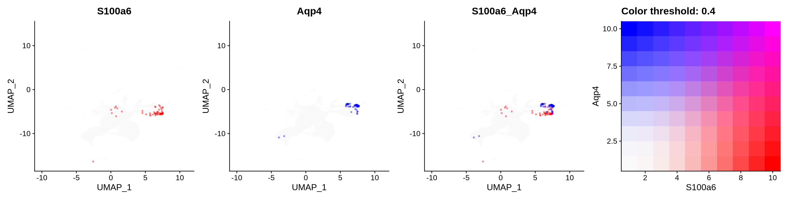
FeaturePlot(astro,
blend = TRUE,
features = c("Cacybp", "Aqp4"),
blend.threshold = 0.4,
max.cutoff = "q99",
min.cutoff = "q30",
pt.size = 0.7,
cols = c("grey98", "red", "blue"),
order = T,
alpha = 0.35)
sessioninfo::session_info()─ Session info ───────────────────────────────────────────────────────────────
setting value
version R version 4.3.3 (2024-02-29)
os Ubuntu 24.04.2 LTS
system x86_64, linux-gnu
ui X11
language (EN)
collate en_US.UTF-8
ctype en_US.UTF-8
tz Europe/Vienna
date 2025-06-17
pandoc 3.6.3 @ /data/Cinquina_2024/.pixi/envs/default/bin/ (via rmarkdown)
quarto 1.7.32 @ /data/Cinquina_2024/.pixi/envs/default/bin/quarto
─ Packages ───────────────────────────────────────────────────────────────────
package * version date (UTC) lib source
abind 1.4-8 2024-09-12 [1] CRAN (R 4.3.3)
annotate 1.80.0 2023-10-24 [2] Bioconductor
AnnotationDbi 1.64.1 2023-11-03 [2] Bioconductor
AnnotationFilter 1.26.0 2023-10-24 [2] Bioconductor
Azimuth * 0.5.0 2024-03-18 [2] local
beeswarm 0.4.0 2021-06-01 [1] CRAN (R 4.3.3)
Biobase 2.62.0 2023-10-24 [2] Bioconductor
BiocFileCache 2.10.1 2023-10-26 [2] Bioconductor
BiocGenerics 0.48.1 2023-11-01 [2] Bioconductor
BiocIO 1.12.0 2023-10-24 [2] Bioconductor
BiocManager 1.30.26 2025-06-05 [2] CRAN (R 4.3.3)
BiocParallel 1.36.0 2023-10-24 [2] Bioconductor
biomaRt 2.58.0 2023-10-24 [2] Bioconductor
Biostrings 2.70.1 2023-10-25 [2] Bioconductor
bit 4.6.0 2025-03-06 [2] CRAN (R 4.3.3)
bit64 4.6.0-1 2025-01-16 [2] CRAN (R 4.3.3)
bitops 1.0-9 2024-10-03 [2] CRAN (R 4.3.3)
blob 1.2.4 2023-03-17 [2] CRAN (R 4.3.3)
BSgenome 1.70.1 2023-11-01 [2] Bioconductor
BSgenome.Hsapiens.UCSC.hg38 1.4.5 2025-06-17 [1] Bioconductor
bslib 0.9.0 2025-01-30 [2] CRAN (R 4.3.3)
cachem 1.1.0 2024-05-16 [2] CRAN (R 4.3.3)
callr 3.7.6 2024-03-25 [2] CRAN (R 4.3.3)
caTools 1.18.3 2024-09-04 [2] CRAN (R 4.3.3)
cellranger 1.1.0 2016-07-27 [2] CRAN (R 4.3.3)
circlize 0.4.16 2024-02-20 [1] CRAN (R 4.3.3)
cli 3.6.5 2025-04-23 [2] CRAN (R 4.3.3)
cluster 2.1.8.1 2025-03-12 [2] CRAN (R 4.3.3)
CNEr 1.38.0 2023-10-24 [2] Bioconductor
codetools 0.2-20 2024-03-31 [2] CRAN (R 4.3.3)
colorspace 2.1-1 2024-07-26 [2] CRAN (R 4.3.3)
cowplot * 1.1.3 2024-01-22 [1] CRAN (R 4.3.3)
crayon 1.5.3 2024-06-20 [2] CRAN (R 4.3.3)
curl 6.2.2 2025-03-24 [2] CRAN (R 4.3.2)
data.table 1.17.6 2025-06-17 [2] CRAN (R 4.3.3)
DBI 1.2.3 2024-06-02 [2] CRAN (R 4.3.3)
dbplyr 2.5.0 2024-03-19 [2] CRAN (R 4.3.3)
DelayedArray 0.28.0 2023-10-24 [2] Bioconductor
deldir 2.0-4 2024-02-28 [2] CRAN (R 4.3.3)
digest 0.6.37 2024-08-19 [2] CRAN (R 4.3.3)
DirichletMultinomial 1.44.0 2023-10-24 [2] Bioconductor
dotCall64 1.2 2024-10-04 [2] CRAN (R 4.3.3)
dplyr * 1.1.4 2023-11-17 [1] CRAN (R 4.3.3)
DT 0.33 2024-04-04 [2] CRAN (R 4.3.3)
EnsDb.Hsapiens.v86 2.99.0 2025-06-17 [1] Bioconductor
ensembldb 2.26.0 2023-10-24 [2] Bioconductor
evaluate 1.0.3 2025-01-10 [2] CRAN (R 4.3.3)
farver 2.1.2 2024-05-13 [2] CRAN (R 4.3.3)
fastDummies 1.7.5 2025-01-20 [2] CRAN (R 4.3.3)
fastmap 1.2.0 2024-05-15 [2] CRAN (R 4.3.3)
fastmatch 1.1-6 2024-12-23 [2] CRAN (R 4.3.3)
filelock 1.0.3 2023-12-11 [2] CRAN (R 4.3.3)
fitdistrplus 1.2-2 2025-01-07 [2] CRAN (R 4.3.3)
forcats 1.0.0 2023-01-29 [2] CRAN (R 4.3.3)
fs 1.6.6 2025-04-12 [2] CRAN (R 4.3.3)
future * 1.58.0 2025-06-05 [2] CRAN (R 4.3.3)
future.apply 1.20.0 2025-06-06 [2] CRAN (R 4.3.3)
gargle 1.5.2 2023-07-20 [2] CRAN (R 4.3.3)
generics 0.1.4 2025-05-09 [2] CRAN (R 4.3.3)
GenomeInfoDb 1.38.8 2024-03-15 [1] Bioconductor 3.18 (R 4.3.3)
GenomeInfoDbData 1.2.11 2025-06-17 [1] Bioconductor
GenomicAlignments 1.38.0 2023-10-24 [2] Bioconductor
GenomicFeatures 1.54.1 2023-10-29 [2] Bioconductor
GenomicRanges 1.54.1 2023-10-29 [2] Bioconductor
getPass 0.2-4 2023-12-10 [2] CRAN (R 4.3.3)
ggbeeswarm 0.7.2 2023-04-29 [1] CRAN (R 4.3.3)
ggplot2 * 3.5.2 2025-04-09 [1] CRAN (R 4.3.3)
ggprism 1.0.6 2025-05-17 [1] CRAN (R 4.3.3)
ggrastr 1.0.2 2023-06-01 [2] CRAN (R 4.3.3)
ggrepel 0.9.6 2024-09-07 [2] CRAN (R 4.3.3)
ggridges 0.5.6 2024-01-23 [2] CRAN (R 4.3.3)
ggsci 3.2.0 2024-06-18 [1] CRAN (R 4.3.3)
git2r 0.35.0 2024-10-20 [2] CRAN (R 4.3.3)
GlobalOptions 0.1.2 2020-06-10 [1] CRAN (R 4.3.3)
globals 0.18.0 2025-05-08 [2] CRAN (R 4.3.3)
glue 1.8.0 2024-09-30 [1] CRAN (R 4.3.3)
GO.db 3.18.0 2025-06-17 [1] Bioconductor
goftest 1.2-3 2021-10-07 [2] CRAN (R 4.3.3)
googledrive 2.1.1 2023-06-11 [2] CRAN (R 4.3.3)
googlesheets4 1.1.1 2023-06-11 [2] CRAN (R 4.3.3)
gridExtra 2.3 2017-09-09 [1] CRAN (R 4.3.3)
gtable 0.3.6 2024-10-25 [2] CRAN (R 4.3.3)
gtools 3.9.5 2023-11-20 [2] CRAN (R 4.3.3)
hdf5r 1.3.12 2025-01-20 [2] CRAN (R 4.3.3)
here * 1.0.1 2020-12-13 [1] CRAN (R 4.3.3)
hms 1.1.3 2023-03-21 [2] CRAN (R 4.3.3)
htmltools 0.5.8.1 2024-04-04 [2] CRAN (R 4.3.3)
htmlwidgets 1.6.4 2023-12-06 [2] CRAN (R 4.3.3)
httpuv 1.6.15 2024-03-26 [2] CRAN (R 4.3.3)
httr 1.4.7 2023-08-15 [2] CRAN (R 4.3.3)
ica 1.0-3 2022-07-08 [2] CRAN (R 4.3.3)
igraph 2.0.3 2024-03-13 [2] CRAN (R 4.3.3)
IRanges 2.36.0 2023-10-24 [2] Bioconductor
irlba 2.3.5.1 2022-10-03 [2] CRAN (R 4.3.3)
janitor 2.2.1 2024-12-22 [1] CRAN (R 4.3.3)
JASPAR2020 0.99.10 2025-06-17 [1] Bioconductor
jquerylib 0.1.4 2021-04-26 [2] CRAN (R 4.3.3)
jsonlite 2.0.0 2025-03-27 [1] CRAN (R 4.3.3)
KEGGREST 1.42.0 2023-10-24 [2] Bioconductor
KernSmooth 2.23-26 2025-01-01 [2] CRAN (R 4.3.3)
knitr 1.50 2025-03-16 [1] CRAN (R 4.3.3)
labeling 0.4.3 2023-08-29 [2] CRAN (R 4.3.3)
later 1.4.2 2025-04-08 [2] CRAN (R 4.3.3)
lattice 0.22-7 2025-04-02 [2] CRAN (R 4.3.3)
lazyeval 0.2.2 2019-03-15 [2] CRAN (R 4.3.3)
leidenbase 0.1.32 2025-02-06 [2] CRAN (R 4.3.3)
lifecycle 1.0.4 2023-11-07 [2] CRAN (R 4.3.3)
listenv 0.9.1 2024-01-29 [2] CRAN (R 4.3.3)
lmtest 0.9-40 2022-03-21 [2] CRAN (R 4.3.3)
lubridate 1.9.4 2024-12-08 [2] CRAN (R 4.3.3)
magrittr * 2.0.3 2022-03-30 [1] CRAN (R 4.3.3)
MASS 7.3-60.0.1 2024-01-13 [2] CRAN (R 4.3.3)
Matrix 1.6-5 2024-01-11 [2] CRAN (R 4.3.3)
MatrixGenerics 1.14.0 2023-10-24 [2] Bioconductor
matrixStats 1.5.0 2025-01-07 [2] CRAN (R 4.3.3)
memoise 2.0.1 2021-11-26 [2] CRAN (R 4.3.3)
mime 0.13 2025-03-17 [2] CRAN (R 4.3.3)
miniUI 0.1.2 2025-04-17 [2] CRAN (R 4.3.3)
nlme 3.1-168 2025-03-31 [2] CRAN (R 4.3.3)
paletteer 1.6.0 2024-01-21 [1] CRAN (R 4.3.3)
parallelly 1.45.0 2025-06-02 [2] CRAN (R 4.3.3)
patchwork * 1.3.0 2024-09-16 [1] CRAN (R 4.3.3)
pbapply 1.7-2 2023-06-27 [2] CRAN (R 4.3.3)
pillar 1.10.2 2025-04-05 [2] CRAN (R 4.3.3)
pkgconfig 2.0.3 2019-09-22 [2] CRAN (R 4.3.3)
plotly 4.10.4 2024-01-13 [2] CRAN (R 4.3.3)
plyr 1.8.9 2023-10-02 [2] CRAN (R 4.3.3)
png 0.1-8 2022-11-29 [2] CRAN (R 4.3.3)
polyclip 1.10-7 2024-07-23 [2] CRAN (R 4.3.3)
poweRlaw 1.0.0 2025-02-03 [2] CRAN (R 4.3.3)
presto 1.0.0 2024-12-13 [2] local
prettyunits 1.2.0 2023-09-24 [2] CRAN (R 4.3.3)
processx 3.8.6 2025-02-21 [2] CRAN (R 4.3.3)
progress 1.2.3 2023-12-06 [2] CRAN (R 4.3.3)
progressr 0.15.1 2024-11-22 [2] CRAN (R 4.3.3)
promises 1.3.3 2025-05-29 [1] CRAN (R 4.3.3)
ProtGenerics 1.34.0 2023-10-24 [2] Bioconductor
ps 1.9.1 2025-04-12 [2] CRAN (R 4.3.3)
purrr 1.0.4 2025-02-05 [1] CRAN (R 4.3.3)
R.methodsS3 1.8.2 2022-06-13 [2] CRAN (R 4.3.3)
R.oo 1.27.1 2025-05-02 [2] CRAN (R 4.3.3)
R.utils 2.13.0 2025-02-24 [2] CRAN (R 4.3.3)
R6 2.6.1 2025-02-15 [2] CRAN (R 4.3.3)
RANN 2.6.2 2024-08-25 [2] CRAN (R 4.3.3)
rappdirs 0.3.3 2021-01-31 [2] CRAN (R 4.3.3)
RColorBrewer * 1.1-3 2022-04-03 [1] CRAN (R 4.3.3)
Rcpp 1.0.14 2025-01-12 [2] CRAN (R 4.3.3)
RcppAnnoy 0.0.22 2024-01-23 [2] CRAN (R 4.3.3)
RcppHNSW 0.6.0 2024-02-04 [2] CRAN (R 4.3.3)
RcppRoll 0.3.1 2024-07-07 [2] CRAN (R 4.3.3)
RCurl 1.98-1.16 2024-07-11 [2] CRAN (R 4.3.3)
readr * 2.1.5 2024-01-10 [2] CRAN (R 4.3.3)
rematch2 2.1.2 2020-05-01 [2] CRAN (R 4.3.3)
remotes 2.5.0 2024-03-17 [1] CRAN (R 4.3.3)
reshape2 1.4.4 2020-04-09 [2] CRAN (R 4.3.3)
restfulr 0.0.15 2022-06-16 [2] CRAN (R 4.3.3)
reticulate 1.42.0 2025-03-25 [2] CRAN (R 4.3.3)
rhdf5 2.46.1 2023-11-29 [2] Bioconductor 3.18 (R 4.3.3)
rhdf5filters 1.14.1 2023-11-06 [2] Bioconductor
Rhdf5lib 1.24.0 2023-10-24 [2] Bioconductor
rjson 0.2.23 2024-09-16 [2] CRAN (R 4.3.3)
rlang 1.1.6 2025-04-11 [2] CRAN (R 4.3.3)
rmarkdown 2.29 2024-11-04 [1] CRAN (R 4.3.3)
ROCR 1.0-11 2020-05-02 [2] CRAN (R 4.3.3)
rprojroot 2.0.4 2023-11-05 [2] CRAN (R 4.3.3)
Rsamtools 2.18.0 2023-10-24 [2] Bioconductor
RSpectra 0.16-2 2024-07-18 [2] CRAN (R 4.3.3)
RSQLite 2.4.1 2025-06-08 [2] CRAN (R 4.3.3)
rstudioapi 0.17.1 2024-10-22 [2] CRAN (R 4.3.3)
rsvd 1.0.5 2021-04-16 [1] CRAN (R 4.3.3)
rtracklayer 1.62.0 2023-10-24 [2] Bioconductor
Rtsne 0.17 2023-12-07 [2] CRAN (R 4.3.3)
S4Arrays 1.2.0 2023-10-24 [2] Bioconductor
S4Vectors 0.40.2 2023-11-23 [2] Bioconductor 3.18 (R 4.3.3)
sass 0.4.10 2025-04-11 [2] CRAN (R 4.3.3)
scales 1.4.0 2025-04-24 [2] CRAN (R 4.3.3)
scattermore 1.2 2023-06-12 [2] CRAN (R 4.3.3)
scCustomize * 3.0.1 2024-12-18 [1] CRAN (R 4.3.3)
sctransform 0.4.2 2025-04-30 [1] CRAN (R 4.3.3)
seqLogo 1.68.0 2023-10-24 [2] Bioconductor
sessioninfo 1.2.3 2025-02-05 [2] CRAN (R 4.3.3)
Seurat * 5.3.0 2025-04-23 [1] CRAN (R 4.3.3)
SeuratData * 0.2.1 2024-03-15 [2] local
SeuratDisk 0.0.0.9021 2024-03-15 [2] local
SeuratObject * 5.1.0 2025-04-22 [2] CRAN (R 4.3.3)
SeuratWrappers * 0.4.0 2025-06-17 [1] Github (satijalab/seurat-wrappers@a1eb0d8)
shape 1.4.6.1 2024-02-23 [1] CRAN (R 4.3.3)
shiny 1.10.0 2024-12-14 [2] CRAN (R 4.3.3)
shinyBS * 0.61.1 2022-04-17 [2] CRAN (R 4.3.3)
shinydashboard 0.7.3 2025-04-21 [2] CRAN (R 4.3.3)
shinyjs 2.1.0 2021-12-23 [2] CRAN (R 4.3.3)
Signac 1.14.0 2024-08-21 [2] CRAN (R 4.3.3)
snakecase 0.11.1 2023-08-27 [1] CRAN (R 4.3.3)
sp * 2.2-0 2025-02-01 [2] CRAN (R 4.3.3)
spam 2.11-1 2025-01-20 [2] CRAN (R 4.3.3)
SparseArray 1.2.2 2023-11-07 [2] Bioconductor
spatstat.data 3.1-6 2025-03-17 [2] CRAN (R 4.3.3)
spatstat.explore 3.4-3 2025-05-21 [2] CRAN (R 4.3.3)
spatstat.geom 3.4-1 2025-05-20 [2] CRAN (R 4.3.3)
spatstat.random 3.4-1 2025-05-20 [2] CRAN (R 4.3.3)
spatstat.sparse 3.1-0 2024-06-21 [2] CRAN (R 4.3.3)
spatstat.univar 3.1-3 2025-05-08 [2] CRAN (R 4.3.3)
spatstat.utils 3.1-4 2025-05-15 [2] CRAN (R 4.3.3)
stringi 1.8.7 2025-03-27 [2] CRAN (R 4.3.3)
stringr * 1.5.1 2023-11-14 [1] CRAN (R 4.3.3)
SummarizedExperiment 1.32.0 2023-10-24 [2] Bioconductor
survival 3.8-3 2024-12-17 [2] CRAN (R 4.3.3)
tensor 1.5.1 2025-06-17 [1] CRAN (R 4.3.3)
TFBSTools 1.40.0 2023-10-24 [2] Bioconductor
TFMPvalue 0.0.9 2022-10-21 [2] CRAN (R 4.3.3)
tibble 3.3.0 2025-06-08 [2] CRAN (R 4.3.3)
tidyr 1.3.1 2024-01-24 [1] CRAN (R 4.3.3)
tidyselect 1.2.1 2024-03-11 [2] CRAN (R 4.3.3)
timechange 0.3.0 2024-01-18 [2] CRAN (R 4.3.3)
tzdb 0.5.0 2025-03-15 [2] CRAN (R 4.3.3)
uwot 0.2.3 2025-02-24 [2] CRAN (R 4.3.3)
vctrs 0.6.5 2023-12-01 [2] CRAN (R 4.3.3)
vipor 0.4.7 2023-12-18 [1] CRAN (R 4.3.3)
viridisLite 0.4.2 2023-05-02 [2] CRAN (R 4.3.3)
vroom 1.6.5 2023-12-05 [2] CRAN (R 4.3.3)
whisker 0.4.1 2022-12-05 [2] CRAN (R 4.3.3)
withr 3.0.2 2024-10-28 [2] CRAN (R 4.3.3)
workflowr * 1.7.1 2023-08-23 [1] CRAN (R 4.3.3)
xfun 0.52 2025-04-02 [2] CRAN (R 4.3.3)
XML 3.99-0.17 2024-06-25 [2] CRAN (R 4.3.3)
xml2 1.3.8 2025-03-14 [2] CRAN (R 4.3.3)
xtable 1.8-4 2019-04-21 [2] CRAN (R 4.3.3)
XVector 0.42.0 2023-10-24 [2] Bioconductor
yaml 2.3.10 2024-07-26 [2] CRAN (R 4.3.3)
zlibbioc 1.48.0 2023-10-24 [2] Bioconductor
zoo 1.8-14 2025-04-10 [2] CRAN (R 4.3.3)
[1] /home/etretiakov/R/x86_64-conda-linux-gnu-library/4.3
[2] /data/Cinquina_2024/.pixi/envs/default/lib/R/library
* ── Packages attached to the search path.
──────────────────────────────────────────────────────────────────────────────
sessionInfo()R version 4.3.3 (2024-02-29)
Platform: x86_64-conda-linux-gnu (64-bit)
Running under: Ubuntu 24.04.2 LTS
Matrix products: default
BLAS/LAPACK: /data/Cinquina_2024/.pixi/envs/default/lib/libopenblasp-r0.3.29.so; LAPACK version 3.12.0
locale:
[1] LC_CTYPE=en_US.UTF-8 LC_NUMERIC=C
[3] LC_TIME=en_US.UTF-8 LC_COLLATE=en_US.UTF-8
[5] LC_MONETARY=en_US.UTF-8 LC_MESSAGES=en_US.UTF-8
[7] LC_PAPER=en_US.UTF-8 LC_NAME=C
[9] LC_ADDRESS=C LC_TELEPHONE=C
[11] LC_MEASUREMENT=en_US.UTF-8 LC_IDENTIFICATION=C
time zone: Europe/Vienna
tzcode source: system (glibc)
attached base packages:
[1] stats graphics grDevices utils datasets methods base
other attached packages:
[1] future_1.58.0 patchwork_1.3.0 cowplot_1.1.3
[4] ggplot2_3.5.2 readr_2.1.5 stringr_1.5.1
[7] magrittr_2.0.3 dplyr_1.1.4 Azimuth_0.5.0
[10] shinyBS_0.61.1 SeuratWrappers_0.4.0 SeuratData_0.2.1
[13] scCustomize_3.0.1 Seurat_5.3.0 SeuratObject_5.1.0
[16] sp_2.2-0 RColorBrewer_1.1-3 here_1.0.1
[19] workflowr_1.7.1
loaded via a namespace (and not attached):
[1] IRanges_2.36.0 R.methodsS3_1.8.2
[3] vroom_1.6.5 progress_1.2.3
[5] poweRlaw_1.0.0 goftest_1.2-3
[7] DT_0.33 Biostrings_2.70.1
[9] vctrs_0.6.5 spatstat.random_3.4-1
[11] digest_0.6.37 png_0.1-8
[13] shape_1.4.6.1 git2r_0.35.0
[15] ggrepel_0.9.6 deldir_2.0-4
[17] parallelly_1.45.0 MASS_7.3-60.0.1
[19] Signac_1.14.0 reshape2_1.4.4
[21] httpuv_1.6.15 BiocGenerics_0.48.1
[23] withr_3.0.2 ggrastr_1.0.2
[25] xfun_0.52 survival_3.8-3
[27] EnsDb.Hsapiens.v86_2.99.0 memoise_2.0.1
[29] ggbeeswarm_0.7.2 janitor_2.2.1
[31] ggsci_3.2.0 zoo_1.8-14
[33] GlobalOptions_0.1.2 gtools_3.9.5
[35] pbapply_1.7-2 R.oo_1.27.1
[37] prettyunits_1.2.0 rematch2_2.1.2
[39] KEGGREST_1.42.0 promises_1.3.3
[41] httr_1.4.7 restfulr_0.0.15
[43] rhdf5filters_1.14.1 globals_0.18.0
[45] fitdistrplus_1.2-2 ps_1.9.1
[47] rhdf5_2.46.1 rstudioapi_0.17.1
[49] miniUI_0.1.2 generics_0.1.4
[51] processx_3.8.6 curl_6.2.2
[53] S4Vectors_0.40.2 zlibbioc_1.48.0
[55] polyclip_1.10-7 GenomeInfoDbData_1.2.11
[57] SparseArray_1.2.2 xtable_1.8-4
[59] evaluate_1.0.3 S4Arrays_1.2.0
[61] BiocFileCache_2.10.1 hms_1.1.3
[63] GenomicRanges_1.54.1 irlba_2.3.5.1
[65] colorspace_2.1-1 filelock_1.0.3
[67] hdf5r_1.3.12 ROCR_1.0-11
[69] reticulate_1.42.0 spatstat.data_3.1-6
[71] lmtest_0.9-40 snakecase_0.11.1
[73] later_1.4.2 lattice_0.22-7
[75] spatstat.geom_3.4-1 future.apply_1.20.0
[77] getPass_0.2-4 scattermore_1.2
[79] XML_3.99-0.17 matrixStats_1.5.0
[81] RcppAnnoy_0.0.22 pillar_1.10.2
[83] nlme_3.1-168 caTools_1.18.3
[85] compiler_4.3.3 RSpectra_0.16-2
[87] stringi_1.8.7 tensor_1.5.1
[89] SummarizedExperiment_1.32.0 lubridate_1.9.4
[91] GenomicAlignments_1.38.0 plyr_1.8.9
[93] crayon_1.5.3 abind_1.4-8
[95] BiocIO_1.12.0 googledrive_2.1.1
[97] bit_4.6.0 fastmatch_1.1-6
[99] whisker_0.4.1 codetools_0.2-20
[101] bslib_0.9.0 paletteer_1.6.0
[103] plotly_4.10.4 leidenbase_0.1.32
[105] mime_0.13 splines_4.3.3
[107] circlize_0.4.16 Rcpp_1.0.14
[109] fastDummies_1.7.5 dbplyr_2.5.0
[111] cellranger_1.1.0 knitr_1.50
[113] blob_1.2.4 seqLogo_1.68.0
[115] AnnotationFilter_1.26.0 fs_1.6.6
[117] listenv_0.9.1 tibble_3.3.0
[119] Matrix_1.6-5 callr_3.7.6
[121] tzdb_0.5.0 pkgconfig_2.0.3
[123] tools_4.3.3 cachem_1.1.0
[125] RSQLite_2.4.1 viridisLite_0.4.2
[127] DBI_1.2.3 fastmap_1.2.0
[129] rmarkdown_2.29 scales_1.4.0
[131] grid_4.3.3 ica_1.0-3
[133] shinydashboard_0.7.3 Rsamtools_2.18.0
[135] sass_0.4.10 ggprism_1.0.6
[137] BiocManager_1.30.26 dotCall64_1.2
[139] RANN_2.6.2 farver_2.1.2
[141] yaml_2.3.10 MatrixGenerics_1.14.0
[143] rtracklayer_1.62.0 cli_3.6.5
[145] purrr_1.0.4 stats4_4.3.3
[147] lifecycle_1.0.4 uwot_0.2.3
[149] Biobase_2.62.0 sessioninfo_1.2.3
[151] presto_1.0.0 BSgenome.Hsapiens.UCSC.hg38_1.4.5
[153] BiocParallel_1.36.0 annotate_1.80.0
[155] timechange_0.3.0 gtable_0.3.6
[157] rjson_0.2.23 ggridges_0.5.6
[159] progressr_0.15.1 parallel_4.3.3
[161] jsonlite_2.0.0 RcppHNSW_0.6.0
[163] TFBSTools_1.40.0 bitops_1.0-9
[165] bit64_4.6.0-1 Rtsne_0.17
[167] spatstat.utils_3.1-4 CNEr_1.38.0
[169] jquerylib_0.1.4 shinyjs_2.1.0
[171] SeuratDisk_0.0.0.9021 spatstat.univar_3.1-3
[173] R.utils_2.13.0 lazyeval_0.2.2
[175] shiny_1.10.0 htmltools_0.5.8.1
[177] GO.db_3.18.0 sctransform_0.4.2
[179] rappdirs_0.3.3 ensembldb_2.26.0
[181] glue_1.8.0 TFMPvalue_0.0.9
[183] spam_2.11-1 googlesheets4_1.1.1
[185] XVector_0.42.0 RCurl_1.98-1.16
[187] rprojroot_2.0.4 BSgenome_1.70.1
[189] gridExtra_2.3 JASPAR2020_0.99.10
[191] igraph_2.0.3 R6_2.6.1
[193] tidyr_1.3.1 labeling_0.4.3
[195] forcats_1.0.0 RcppRoll_0.3.1
[197] GenomicFeatures_1.54.1 cluster_2.1.8.1
[199] Rhdf5lib_1.24.0 gargle_1.5.2
[201] GenomeInfoDb_1.38.8 DirichletMultinomial_1.44.0
[203] DelayedArray_0.28.0 tidyselect_1.2.1
[205] vipor_0.4.7 ProtGenerics_1.34.0
[207] xml2_1.3.8 AnnotationDbi_1.64.1
[209] rsvd_1.0.5 KernSmooth_2.23-26
[211] data.table_1.17.6 htmlwidgets_1.6.4
[213] biomaRt_2.58.0 rlang_1.1.6
[215] spatstat.sparse_3.1-0 spatstat.explore_3.4-3
[217] remotes_2.5.0 beeswarm_0.4.0